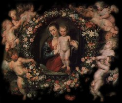

A ORAÇÃO TRANSFIGURA A ALMA
Na vida espiritual a única coisa que importa é entrar na amizade e na intimidade com DEUS. Quando procuramos estar próximos do SENHOR e nosso proceder é transparente, nos tornamos disponíveis e ELE realizará "tudo" em nós.
Até as pequenas coisas que acontecem e perturbam no dia a dia, não mais nos perturbarão, porque o ESPÍRITO SANTO atuará efetivamente, iluminando o raciocínio, dissipando as nuvens de dúvidas e desconfianças. Não significa dizer que "as dificuldades" não acontecerão mais. Não é assim. São fatos que ocorrem no cotidiano a todos nós. Importante, é que a Luz do ESPÍRITO irá iluminar o raciocínio, dando-nos segurança no proceder e oferecendo compreensão sobre cada fato ocorrido, trazendo tranquilidade, sabedoria para contorná-los ou solucioná-los, assim como trazendo paz ao interior do coração.
A Transfiguração de JESUS que a Sagrada Escritura descreve, não ocorreu num estádio de futebol repleto de pessoas e nem num anfiteatro de um imenso parque, mas no silêncio de uma montanha, no Monte Tabor, depois de uma longa Oração que fez ao ETERNO PAI, em companhia de amigos (os Apóstolos Pedro, João e Tiago Maior). Foi verdadeiramente naquele retiro, no silêncio da Oração, que se realizou a Transfiguração.
Para nós, isto não deve ser apenas um "sinal" sobre o poder da Oração, mas uma indicação segura, uma definição de caminho, para todos que desejam alcançar a "transfiguração interior" , eliminando o proceder supérfluo, tendo forças para neutralizar as investidas do mal e procurar seguidamente aperfeiçoar as qualidades e virtudes, produzindo uma profunda reforma em seu espírito, uma verdadeira "transfiguração da alma".
Isto acontece, porque durante a Oração não ocorre
somente o som de nossos pedidos, das nossas lamentações, descrevendo nossas tristezas,
derramando sobre o CRIADOR nossas dores e angústias.
Aquele, é um momento sagrado, em que também permitimos ao SENHOR
agir em nós, inclusive para transformar a nossa vida. O SENHOR ouve
carinhosamente o som de todas as nossas súplicas e atua decisivamente
no instante adequado.
Mas para que isto ocorra de fato, é preciso haver um clima propício, é necessário que as pessoas além de se decidirem renovar a própria existência, estejam dispostas a mudar os seus costumes, procurando corrigir as imperfeições, assumindo as responsabilidades no cotidiano, colocando a Cruz dos deveres e das obrigações nos ombros e dedicando ao SENHOR, um espaço necessário através das preces diárias. Somente quando isto começar a acontecer, é que sua alma indicará que está morrendo o homem velho, aquele de pouca fé, cheio de vícios e de "cacoetes", que vivia distante do SENHOR, e está nascendo o homem novo, numa demonstração evidente de que está ocorrendo a transformação de sua vida.
Quando acontecem as manifestações
sobrenaturais, muitas pessoas desejam ansiosamente saber o que
NOSSA SENHORA falou, o que Ela prometeu, ou o que vai fazer por
nós. Assim, em face das Mensagens Divinas, intimamente muitas
pessoas projetam organizar a existência, ser mais fieis e
amigas de DEUS, colocando mais santidade em sua vida. Todavia,
passado aquele momento de entusiasmo, na sequência do viver, se
esquecem daqueles pensamentos tão sublimes, porque lhes falta o elo
essencial que é a oração, porque ela é a "estrutura" que mantém as pessoas
unidas ao CRIADOR. 
Em todas oportunidades nossa MÃE SANTÍSSIMA sempre pede: "Rezai, rezai, rezai..."
Solicitado por um peregrino, um vidente de Medjugorje perguntou a MÃE DE DEUS, "porque Ela sempre pedia Orações?" NOSSA SENHORA respondeu:
"Rezai quando puderdes. Rezai como puderdes. Mas rezai cada vez mais. Nada mais tenho a dizer-vos. Se orardes com o coração compreendereis todas as coisas."
Em outra oportunidade, a VIRGEM MARIA se manifestou assim:
"Não esqueçais: não se vive apenas de trabalho, vive-se também de Oração. Os vossos trabalhos não irão bem sem a Oração".
Contra o mal do mundo não se luta com argumentos humanos, nem com argumentos científicos, nem com a guerra, nem com os estudos e leituras bíblicas, e muito menos com aprofundamentos teológicos, "mas com a fé, com o amor e com a Oração".
Satanás com sagacidade utiliza a confusão como sua principal arma, porque ele é um ser que engana e mente, usando estes dois ingredientes para aprontar confusões. Por isso não podemos permitir que em nosso coração albergue a confusão. O fiel consciente precisa se manter atento a fim de não aceitar, mesmo involuntariamente, este terrível veneno do demônio, porque irá conduzi-lo a algum tipo de transgressão, querendo destruir seu vínculo com DEUS.
Estas considerações devem nos colocar vigilantes e perfeitamente conscientes de que é necessário ter confiança no SENHOR e procurar demonstrar em todas oportunidades a nossa fé e o respeito ao CRIADOR, através de um comportamento digno e honesto, sobretudo sendo perseverante na oração, porque o poder da Oração é tão grande, que um dia, justamente através dela, a sua vida será verdadeiramente transfigurada.